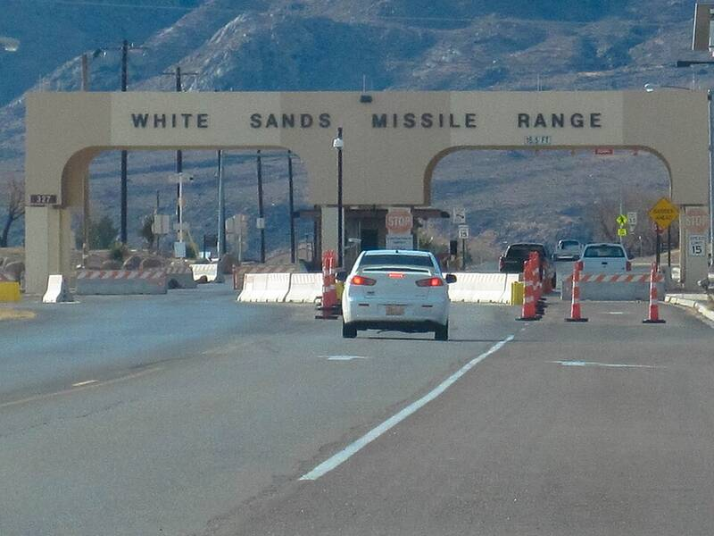

White Sands Missile Range
New Mexico

Largest military installation in the U.S. and site of the 1945 Trinity test. Many early UFO reports came from its missile trackers. 1
Open in the interactive Watcher
Sources
- White Sands Missile Range Wikipedia